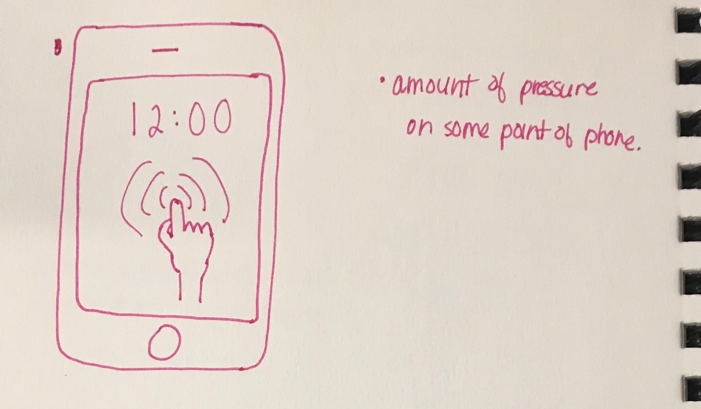
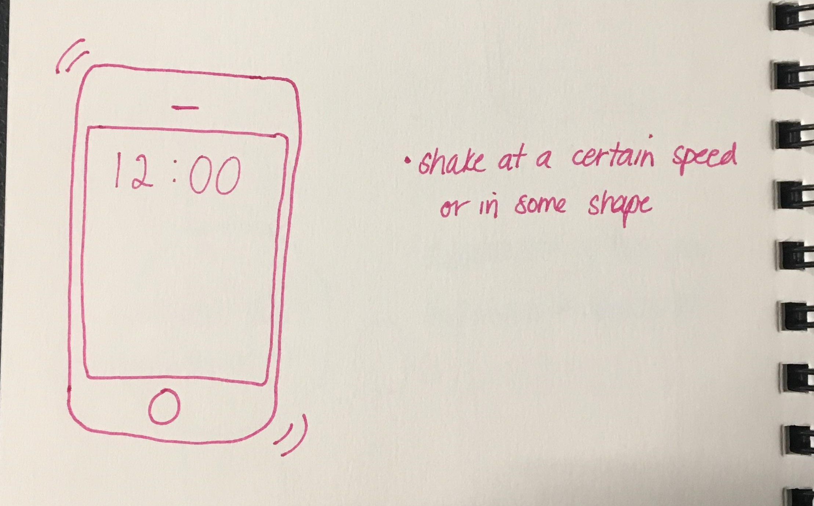
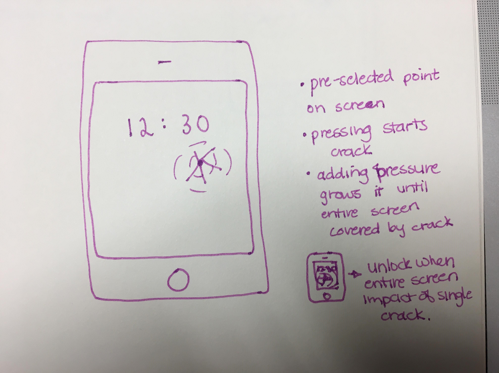
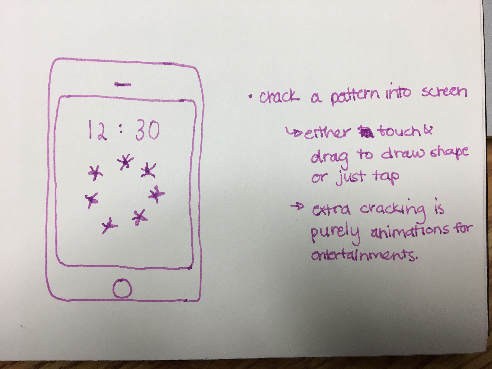

Group Members: Andrea, Bryan, Rhys, Grace, Sabrina
The goal of this project was to create two different implementations of the "Slide to Unlock" feature on smartphones.
Two iterations were to be created, one that used a gesture or mlti-touch input, and one that used sensory input.
We began our ideation process with our initial sketches. My initial ideas were more on the realistic side and about the functionality, rather than about the design.
This took a quick turn once I began to verbalize my ideas and expand on my thought process. Below are my initial sketches.
We each also tried to split our initial sketches over the two types of prototypes we were trying to create: sensor input and multi-touch, or gesture, input.


Following meeting as a group to discuss our initial sketches, we chose 2-3 designs each to share with the class during the in-class design critique.
I shared my ideas of using the 3DTouch (or ForceTouch) feature on iPhones, as well as my idea of waving your phone in either a particular shape or pattern, or
at some certain speed to activate the unlock.
Other ideas shared by my group members include waving a magic wand, cracking your screen, blowing away the seeds on a dandelion, opening and drinking a bottle of something,
and sign language shape recognition.
Some of the design feedback we received includes the following:
The sign language design could be hard to implement, maybe think about other hand symbols
Using the pressure feature allows for mild security but only works for iPhone
Phone screen cracking idea is cool, easy to use and can be made more interactive with different features
Can extend the phone screen cracking idea by adding larger cracks based on pressure
The ideas where you have to play a game to unlock the phone are cool, they make you work to use your phone
Bed shaking idea ensures there is no accidental unlocking, however yelling at your phone in public is not really ok
Extend the magic wand idea to add a magic word, both the word & gesture must occur to unlock
Dandelion idea is unique, it's a more subtle action to blow into your phone rather than speak to it or yell at it
Dandelion idea also would look good as an idle lock screen
Slide to Unlock Version 1: Gesture or Multi Touch Input
Refined Sketches:

Sabrina's sketch

Sabrina's sketch
Sabrina's sketch
Grace's sketch
Grace's sketch
We chose to build our prototype around the idea of the fourth refined sketch, in which there's multiple pressure points on the screen.
In order to unlock the phone, all pressure points must be touched but in no specific order.
Initially, we were hoping to extend on this design by implementing recognition for the amount of pressure placed on a point, however,
due to time constraints we were unable to achieve this stretch goal.
We chose to build our prototype around the idea of the final refined sketch, in which the main image on the screen is a large dandelion
and the individual seeds blow off, a couple at a time. The idea is to blow on the dandelion to make all the seeds blow off, once the
dandelion stem is bare, the phone will unlock. This is to be done using the microphone sensor, meaning, the sound of the blowing
is to be picked up.